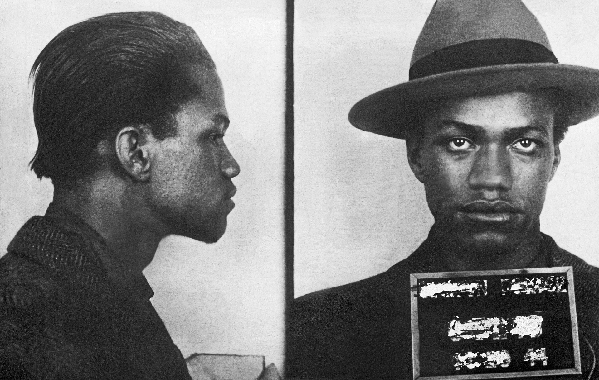
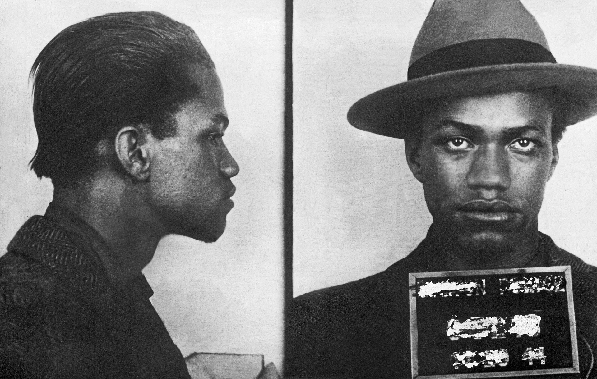

Malcolm X
Defender of Human Rights

 

Early Life
Malcolm X was born Malcolm Little on May 19, 1925 in Omaha, Nebraska. His father Earl Little was a itnerant baptist minister and a vehement advocate of Marcus Garvey. The local Ku Klux Klan in Omaha frequently harassed Malcolm's family because of his fathers preaching that was "stirring up the good'ole black folks" in their estimation. Consequently, the Little family moved to Lansing, Michighan this is where Malcolm grew up. Although the Little family relocated to Michighan, Earl Little's sermons that were disseminated to local African-American churchs did not cease.The contents in these sermons integrated Marcus Garvey's Pan-african/racial pride ideologies and rhetoric . Inevitably, the Little family was again subjected to harassment this time by the local white supremacist group called the Black Legionaries. In 1931, Malcolm's father was brutally murdered by the Black Legionaries. Authorities asserted that his death was an accident. The widowed Mrs.Little was denied the benefits that were included in Earl Little's insurance policy. The Little family would not be able to fathom the upcoming challanges that lay ahead.
Early Life
Malcolm X was born Malcolm Little on May 19, 1925 in Omaha, Nebraska. His father Earl Little was a itnerant baptist minister and a vehement advocate of Marcus Garvey. The local Ku Klux Klan in Omaha frequently harassed Malcolm's family because of his fathers preaching that was "stirring up the good'ole black folks" in their estimation. Consequently, the Little family moved to Lansing, Michighan this is where Malcolm grew up. Although the Little family relocated to Michighan, Earl Little's sermons that were disseminated to local African-American churchs did not cease.The contents in these sermons integrated Marcus Garvey's Pan-african/racial pride ideologies and rhetoric . Inevitably, the Little family was again subjected to harassment this time by the local white supremacist group called the Black Legionaries. In 1931, Malcolm's father was brutally murdered by the Black Legionaries. Authorities asserted that his death was an accident. The widowed Mrs.Little was denied the benefits that were included in Earl Little's insurance policy.
Childhood
Following the untimely death of her husband, Louise Little tried desparately to provide for her seven children but that effort would ultimately take a significant toll on her. Louise worked a variety of menial jobs, however when it was revealed who she widowed she would be terminated almost immediately. From a financial standpoint the Little family at this point was impoverished, eventually they came to rely upon state welfare. Moreover, state agency officers around this time period would frequently visit the Little household, constantly asserting Louise's incompetence in regards to taking care of her children. Inevitably, Louise suffered a complete mental break down and Malcolm along with his siblings became wards of the state.


Nation of Islam
Malcolm X was born Malcolm Little on May 19, 1925 in Omaha, Nebraska. His father Earl Little was a itnerant baptist minister and a vehement advocate of Marcus Garvey. The local Ku Klux Klan in Omaha frequently harassed Malcolm's family because of his fathers preaching that was "stirring up the good'ole black folks" in their estimation. Consequently, the Little family moved to Lansing, Michighan this is where Malcolm grew up. Although the Little family relocated to Michighan, Earl Little's sermons that were disseminated to local African-American churchs did not cease.The contents in these sermons integrated Marcus Garvey's Pan-african/racial pride ideologies and rhetoric . Inevitably, the Little family was again subjected to harassment this time by the local white supremacist group called the Black Legionaries. In 1931, Malcolm's father was brutally murdered by the Black Legionaries. Authorities asserted that his death was an accident. The widowed Mrs.Little was denied the benefits that were included in Earl Little's insurance policy.